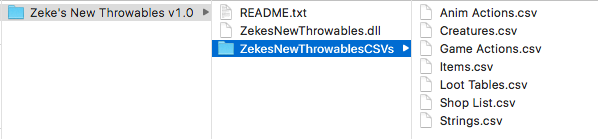

Step 1: Install Partiality
Steps by Zandra with some minor modifications.
- Download Partiality
- Extract the .zip file anywhere you want.
- Run "Partiality Launcher.bat"
- Press "File" at the top, then "Open Game"
- Find your game's .exe and select it
- Once you have it selected, press "Patch Game" at the bottom.
- It will patch the game and create folders for you
- Navigate to the game's folder
- Put mods in the "Mods" folder
- Re-Launch partiality, and enable/disable mods as you need. Press "Patch Game" whenever you're ready, and press "Yes" when it asks you to launch the game.
Step 2: Install Abraxis Toolset
- Download Abraxis Toolset
- Extract the .rar file anywhere you want.
(Look at that README.txt file existing, literally insisting that you read it. It will tell you to...)
- Place AbraxisToolset.dll into Necropolis/Mods
- Place discord-rpc.dll into Necropolis/Plugins
- In Partiality, click refresh, then click the Abraxis Toolset checkbox, then click "patch game"
Step 3: Adding Mods
- Download the mods you want to install. For this example, we'll use Zeke's New Throwables.
Downloads should be from the mod's "releases" page if they're from Github otherwise you're probably getting the wrong files.
- Extract the .zip or .rar file anywhere you want.
(Preferably somewhere you can find it later)
 - Place folders containing the CSV files into Necropolis/Mods
Unless the mod's instructions specify otherwise.
- Place .dlls into Necropolis/Mods
Unless the mod's instructions specify otherwise.
- At the end of this process, your mods folder should look something like this:

- In Partiality, refresh the mod list, then select the mods you want to patch in, and patch the game.
For simplicity, assume that ALL mods require Abraxis Toolset to be patched in.
Partiality only detects .dll files. If a mod only uses CSVs it will be patched in when the game starts by Abraxis Toolset as long as they are in the mods folder.
Don't change the names of any mod files or you will probably break something.
Step 4: Fixing problems
If there's an infinite load screen: verify integrity of local files through steam. Patch the game with only Abraxis checked. Then patch the game with your mods of choice.